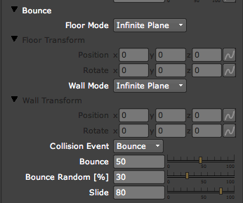
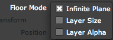
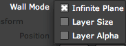
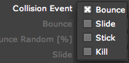

Physics tab> Bounce group
The Bounce group is used to make particles bounce off of specific nodes in the composition. Bounce is one of two Physics Models offered in the Physics tab. The other Physics Model is the Air group.
Two image nodes can be specified for the Bounce: the Floor and the Wall. The Floor and Wall must stand still; they cannot contain any keyframes. Your camera can move around in the scene, but the Floor and Wall must be fixed in the scene; otherwise, Particular cannot calculate the correct position for the particle motion.

The Bounce group.
Floor Mode pop-up
Floor Mode is used to calculate the size or extents of the Floor. To select an image node to use as the Floor, use the Floor input port.

There are three Floor Mode options:
Floor Transform> Position x, y
Sets the position of the Floor along the X and Y axes.
Floor Transform> Rotate x, y
Sets the rotation angle of the Floor along the X and Y axes.
Wall Mode pop-up
Similar to Floor Mode, the Wall Mode is used to calculate the size or extents of the Wall. To select an image node to use as the Wall, use the Wall input port.

There are three Wall Mode options:
Wall Transform> Position x, y
Sets the position of the Wall along the X and Y axes.
Wall Transform> Rotate x, y
Sets the rotation angle of the Wall along the X and Y axes.
Collision Event
Controls what happens during a Bounce collision with options to allow the particles to bounce, slide, stick, or kill.

There are four Collision Event options:
• Bounce: This mode is the default choice. It will cause particles to bounce off the nodes defined in the Floor and Wall menus, just as a ball would bounce off of the floor in the real world. Only in this mode can you set the Bounce, Bounce Random, and Slide controls (explained below).
• Slide: This mode causes the particles to slide parallel to the Floor or Wall after the collision. This is useful for emulating a thick liquid such as oil pouring into a Teflon pan. The result is the liquid sliding round on the surface, not bouncing away from it.
• Stick: This mode makes the particles stop and remain exactly where they collide with the Bounce layers. This useful for creating an effect such as snow building up on an object.
• Kill: This mode removes the main particle when it makes contact with the Bounce node. This behavior is useful when the Aux Emitter tab> Emit control is set to Emit at Collision. You can use the main Particle Type to create one appearance and the Aux particle system to create a secondary type of particle with a different appearance after the Bounce event.
Bounce
Determines how much energy is conserved during the Bounce. High values make the particles bounce higher after the collision while low values cause the particles to bounce very little, losing most of their momentum from the collision.
Bounce Random
Sets the randomness for the Bounce value. High values apply more randomness to the Bounce. Bounce Random makes the particles bounce a little differently in height. This can make the result look more realistic, since objects that strike a surface in the real world don't all have the same momentum or post-collision velocity.
Slide
Sets the momentum of the particles parallel to the surface. High values mean the particles will slide off the surface quickly, like objects hitting ice. Low values mean particles will stall or stick to the surface. If the Bounce and Slide control are set to a value of 0, the result will be the same as setting the Collision Event to Stick mode instead of Bounce.